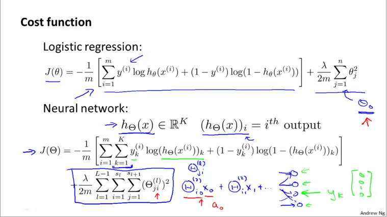
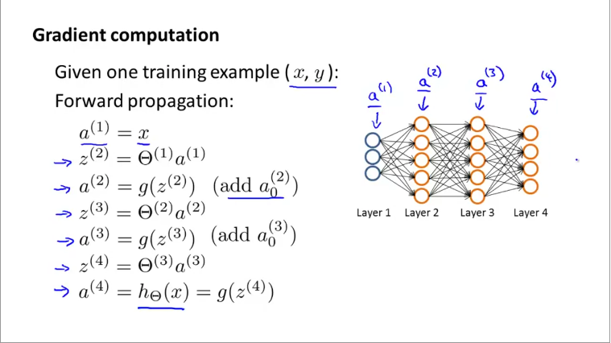
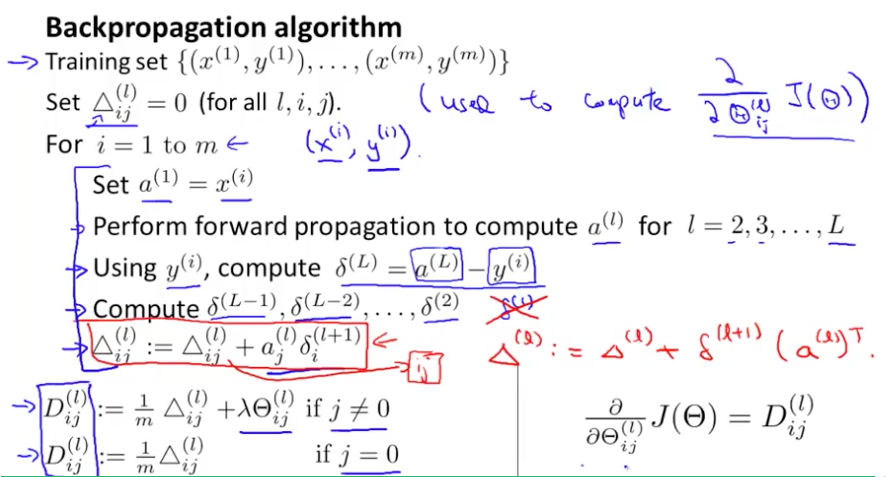
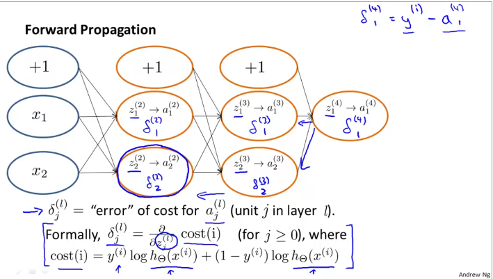

Understanding backpropagation in neural networks
This page talks about the formula, intuition and the mechanics of the backpropagation optimization function.
A neural network is composed of several layers of neurons connected to one another. Each neuron is activated when the sum of weights multiplied by the values of the neurons in previous layer is over a threshold when you pass it through a sigmoid / logit function. The threshold is usually 0.5. In order for a neural network to get trained, the weights of all the different neurons need to be adjusted to yield the minimal loss. Backpropagation is the process by which the weights are adjusted during the training process. To understand how this works, we need to understand how to calculate the loss/cost function of a neural network.
Cost function of a neural network¶
The cost function of a NN builds on the cost function of a logistic regression. Recall from Logistic regression page, the cost function of a logistic regression is
$$ J(\theta) = -\frac{1}{m}\left[\sum_{i=1}^{m}y^{(i)}log(h_{\theta}(x^{(i)})) + (1-y^{(i)})log(1-h_{\theta}(x^{(i)}))\right] + \frac{\lambda}{2m}\sum_{j=1}^{n}\theta_{j}^{2} $$
where $m$ is number of training samples and $n$ is number of parameters.
A neural network is like a multi-class logistic regression. Thus, we need to sum over $K$ classes. In reality, $K$ refers to the number of nodes in the output layer. Thus, in binary classification, although the number of classes is 2, the number of nodes in output layer is just 1. Thus K=1. The cost function is given as
$$ J(\Theta) = \frac{-1}{m} \sum_{i=1}^{m} \sum_{k=1}^{K} \left[ y_{k}^{(i)}log(h_{\theta}(x_{k}^{(i)})) + (1-y_{k}^{(i)})log(1-h_{\theta}(x_{k}^{(i)}))\right] $$
where - $m$ is number of training samples. $i=1\;to\;m$ - $K$ is number of nodes in output layer and $k=1 \; to \; K$
The above formula is cost without penalty or regularization. It is similar to the cost of a multiclass logistic regression. In practice, for logistic regression, we compute cost for training data as a whole. In NN, we compute cost for each training sample per by summing the loss over each class, each sample and finally dividing by number of samples.
Cost function of neural network with regularization¶
We penalize a network for the number of hidden layers and the number of nodes in each layer, simple. The penalty is simply the square of weights for each node, summed up and divided by twice the number of training samples. We finally multiply this result by a factor denoted by $\lambda$. Thus
$$
J(\Theta) = \frac{-1}{m} \sum_{i=1}^{m} \sum_{k=1}^{K}
\left[
y_{k}^{(i)}log(h_{\theta}(x_{k}^{(i)})) +
(1-y_{k}^{(i)})log(1-h_{\theta}(x_{k}^{(i)}))
\right] +
\frac{\lambda}{2m} \left[
\sum_{l=1}^{L-1}\sum_{r=1}^{s_{l}}\sum_{c=1}^{s_{l+1}} (\Theta_{r,c}^{l})^{2}
\right]
$$
where
- $m$ is number of training samples. $i=1\;to\;m$
- $K$ is number of nodes in output layer and $k=1 \; to \; K$
- $L$ is number of layers in the network and $l=1 \; to \; L-1$ as we exclude the input layer
- $s_{l}$ is number of nodes in a given layer $l$.
- In the penalty term we sum from for each row and column of the weight matrix. That is, from $r=1 \; to \; s_{l}$ and $c=1 \; to \; s_{l+1}$
randcrepresent the rows and columns of the weight matrix for each layer.
Intuitively, the number rows in a weight matrix depends on number of nodes in that layer. The number of columns however, depends on number of nodes in the next layer (hence summing up to $s_{l+1}$).
From the course, the cost function is given as below. Notice a slight change in the suffix used for penalty. I changed it for clarity in my formula above.

The $\Theta$ (weight) matrix is 2D for each layer. When you stack all layers together, it becomes a 3D matrix.
Backpropagation¶
The cost function gives us a single unit of measure on how well the network performs. The value of the cost function itself is not to be interpreted as such (unlike RMSE or $R^{2}$ which give you an interpretable result). However, you can compare the performance of different hyperparameters or weights by comparing the resulting loss reported by the cost function.
Thus, the objective of backpropagation is to minimize the cost function described above using partial derivatives. For each training sample, we compute an error matrix, which reflects the difference between predicted and output values. It is straightforward to compute the error for the last layer, which is the difference between expected and predicted outputs. Progressively, we compute the error for each of the previous layers.
Let us start by reviewing the steps in forward propagation. The vectorized implementation of it is given in the slide below:

Next, we start by computing the error in the last layer.
$$ \delta_{j}^{(4)} = a_{j}^{(4)} - y_{j} $$$$ Where \; j \; stands \; for \; each \; node \; in \; the \; layer.\; In \; vectorized \; terms $$$$ \delta^{(4)} = a^{(4)} - y $$
The error vector is now simply the difference between the expected and predicted vectors. We can compute the delta terms for the earlier layers of the network as follows:
$$ \delta^{(3)} = (\Theta^{(3)})^{T}\delta^{(4)}.*g'(z^{(3)}) $$
Where $g'$ for l=3 is
$$ g' = a^{(2)}.*(1-a^{(2)}) $$
and so on..
We don't calculate error for layer 1. Thus no $\delta^{(1)}$. The equations above give the formulae to calculate error for one training sample. When calculating the backprop for many training samples, we first perform forward propagation, compute the weights, then immediately, perform backprop to calculate the error terms and update the weights immediately. Next, we proceed to the next training sample.

The figure above shows the vectorized implementations of calculating the error term for all samples as a 2D matrix $\Delta_{ij}^{(l)}$, where $i=1 to m$ represents individual training samples and $j$ and $l$ stand for number of nodes in each layer and layer number respectively. The vectorized implementation is given by
$$ \Delta^{(l)} := \Delta^{(l)} + \delta^{(l+1)}(a^{(l)})^{T} $$
The matrixes $D^(l)_{ij}$ represent the gradient matrices.
Backpropagation Intuition¶
Consider the following example of a simple neural net.

The error term for last layer is calculated as $\delta_{1}^{(4)} = y^{(i)} - a_{1}^{(4)}$. Then, the error term for previous layers is given by
$$ \delta_{1}^{(3)} = \Theta_{1,1}^{(3)}\delta_{1}^{(4)} $$ $$ \delta_{2}^{(3)} = \Theta_{1,2}^{(3)}\delta_{1}^{(4)} $$
Similarly, for the previous layer, $$ \delta_{1}^{(2)} = \Theta_{1,1}^{(2)}\delta_{1}^{(3)} + \Theta_{2,1}^{(2)}\delta_{2}^{(3)} $$
Thus, to calculate the errors in each of the nodes, we need to errors in the terms to the right. In other words, we calculate the error terms from the right to the left, in reverse of the network direction, thus the name backpropagation (of errors).
Backpropagation implementation¶
Unrolling: The input layer of a neural network is usually a 1-D array. Thus, when training on image data (which is at a minimum 2D), the images are flattened to a long 1D array (vector), where each row is spliced one after another. This process is called unrolling. The inverse transformation is called rolling which returns the matrix back to its n-D form.
Gradient checking¶
Gradient checking is an alternate method of getting gradients through numerical approximation techniques. The idea is, consider the cost function is a curve and is a function of your weights $\theta$. The objective is to compute the gradient of the curve at different locations. This numerical approximation method computes the gradient by treating infinitesimally small segments as a straight line and compute the slope of such segments as an approximation for the gradient.
Thus:
$$ gradApprox \; = \; \frac{J(\theta + \epsilon) - J(\theta - \epsilon)}{2\epsilon} $$
Random initialization¶
In logistic regression and linear regression, we initialized the weights to 0 and were able to compute the cost and gradients and finally arrive at the best result. However, this is not possible with neural networks. When weights are all 0 (or a constant), then each neuron is essentially identical to the rest. Thus, we need to break this symmetry by initializing the weights randomly.
In practice, a lower and upper bound (denoted as $[-\epsilon_{init}, \epsilon_{init}]$) is chosen and weights are assigned randomly between these values. A rule of thumb for calculating the limits is to base it on the number of units in the network as:
$$ \epsilon_{init} = \frac{\sqrt{6}}{\sqrt{L_{in} + L_{out}}} $$
where - $L_{in} = s_{l}$ and $L_{out} = s_{l+1}$ which are the number of units in the current and next layer.
Network architecture choices¶
Architecture choices refer to number of hidden layers and number of nodes / neurons in each layer etc. In general, the number of nodes in input layer depend on number of parameters (or pixels in an image) and the number nodes in output layer depend on number of classes.
As to the hidden layers, having 1 hidden layer is pretty common, the next common is if you are having multiple hidden layers, then the number of nodes in each hidden layer is maintained the same. By and large, the more hidden units / nodes in each layer, the better it is.
The number of nodes in hidden layers is comparable or (slightly more than) to number of units in input layer.